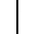
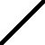
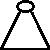

Voltar
Clique nos elementos e depois clique nos quadrados para selecioná-los.
Comece pelo último quadrado à esquerda.
Após inserir algum elemento que esteja acima da primeira linha, você deve clicar nos elementos nos quais ele se conecta.
O resultado do circuito aparecerá nesta caixa de texto. Copie e cole o resultado na caixa de texto da
página principal
.
Gerar circuito
Desfazer operação
 
